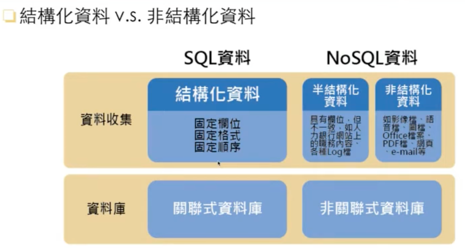
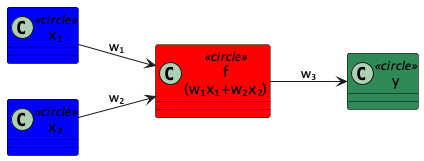

資料預處理
Table of Contents

1. AI處理的資料
如前所述，機器學習在訓練模型時會需使用龐大的資料集，這些資料集某種程度上就是我們常聽到的「大數據(Big Data)」。大數據與傳統資料在以下幾個方面有顯著差異：
1.1. 資料量：
- 大數據：AI所需的大數據集規模通常極大，通常包含數十萬、數百萬甚至數十億筆記錄。這些資料可以來自網路使用者的行為、傳感器數據、社群媒體等。
- 傳統資料：傳統意義上的資料通常規模較小，例如企業的銷售記錄、財務報表，或者手動收集的問卷調查結果。
1.2. 資料結構：

Figure 1: 結構化與非結構化資料
- 大數據：大數據包含圖1中的各種結構化(如Excel報表、Sensor回傳資料)、半結構化(有欄位、但不一致)和非結構化數據(如社群軟體貼文)。這些數據可以包括文字、圖片、影片、聲音等，因此處理大數據需要考慮多樣的資料格式。
- 傳統資料：通常是結構化的資料，例如SQL資料庫中的表格，行列分明，資料屬性相對簡單。
1.3. 資料處理與儲存：
- 大數據的儲存：由於大數據的數量龐大，通常需要分散式系統來存儲，例如Hadoop、分散式資料庫等。大數據的資料儲存涉及到不同的檔案格式，如Parquet、Avro等，這些格式有助於壓縮數據並高效存取。
- 傳統資料的儲存：多數情況下會採用關聯式數據庫來儲存，使用如MySQL、PostgreSQL等。
1.4. 資料更新頻率：
- 大數據：大數據來自不斷變化的即時數據來源，資料更新的頻率可能是每秒、每分鐘，甚至是即時的，因此需要考慮實時(realtime)處理的需求。
- 傳統資料：傳統資料通常是靜態的，資料更新的頻率低，通常是批量更新，並且並不需要即時性。
1.5. 資料處理特點：
- 大數據處理：因應資料量和資料格式的多樣化，大數據處理更多地依賴於分布式處理技術，例如MapReduce、Spark。這些工具的設計旨在能夠平行處理大量的資料。
- 傳統資料處理：傳統資料處理則多數使用單機處理技術，或是使用單一SQL語句進行分析，處理的複雜度和規模有限。
這些差異決定了AI所面臨的資料不僅僅是量上的增加，更是對多樣性和處理方法上的挑戰。因此，資料的儲存格式、擴充性和資料品質變得更加重要，需要採取新的資料預處理方法，確保AI模型可以有效使用這些數據。
2. 資料預處理
在收集到所需的資料後，常會遇到各種資料不全、缺失的情況，因此需要對資料進行整理，以便後續的分析。在進行資料建模運算之前，需要進行的資料預處理工作大致可分為以下幾點：
2.1. 資料遺漏值與異常值處理
對於資料中的缺失值或異常值，可以採取以下方法：
- 刪除有遺漏值或異常值的樣本或特徵。
- 用平均值、中位數、眾數等方法進行填補。
- 對於異常值，可以選擇替代處理，以減少對模型的負面影響。
2.2. 資料編碼
針對類別型資料進行編碼，常見的編碼方法有：
- 標籤編碼（Label Encoding）：將類別資料轉換為數值標籤，適用於類別之間有順序性的情況。
- 獨熱編碼（One-Hot Encoding）：將類別資料轉換為二進位表示，每個類別對應一個新特徵，適用於類別之間無順序性的情況。
- 二元編碼（Binary Encoding）：對於類別數量較多的情況，二元編碼可以有效減少特徵數量，平衡編碼效率與模型複雜度。
2.3. 資料標準化與正規化
- 對資料進行標準化或正規化，以便縮放資料範圍，確保所有特徵值在相似的數值範圍內，這樣有助於提升模型的訓練效果。
- 標準化（Standardization）：將資料轉換為均值為0、標準差為1的分布。
- 正規化（Normalization）：將資料縮放到特定範圍內，通常是0到1之間。
2.4. 資料特徵選取
- 根據資料集中的特徵對預測目標的影響程度，選擇保留有用的特徵。這可以透過統計方法或特徵重要性評估技術來實現。
- 特徵選取有助於減少模型的複雜度，提升模型的泛化能力，並且可以減少過擬合的風險。
2.5. 資料擴增
- 對於資料量不足的情況，可以使用資料擴增技術來增加訓練資料的多樣性，例如對圖像進行旋轉、翻轉等操作，或是對文本進行同義詞替換等方法。
- 資料擴增有助於提升模型的泛化能力，減少過擬合的風險，並且可以在有限的資料集上獲得更好的性能。
2.6. 資料縮減
- 使用主成分分析（PCA）等方法來降低資料維度，減少運算量並保留重要資訊。
- 使用特徵選取方法來刪除不相關或冗餘的特徵，以提升模型的效率和性能。
2.7. 資料訓練集與測試集之分割
- 將資料集分為訓練集和測試集，以便進行模型訓練和性能評估。通常的分割合適比例為80%訓練集與20%測試集，或者70%與30%。
以下的程式碼 大部份 都是 簡單 的pandas應用，如果你看不懂，表示你自己要惡補一下Pandas的課程，可以參看:
3. 資料遺漏值與異常值處理
3.1. 讀檔
3.1.1. Colab
3.1.1.1. 檔案在/content裡

3.1.1.2. 檔案在你的Google Drive
先連結Google Drive
1: import pandas as pd 2: # import Google Drive 套件 3: from google.colab import drive 4: # 將自己的雲端硬碟掛載上去 5: drive.mount('/content/gdrive') 6: # 透過 gdrive/My Drive/... 來存取檔案 7: test = pd.read_csv('gdrive/My Drive/CatDog.csv') 8: test
3.1.1.3. 檔案在網路上
可以利用pandas直接讀取網路上的資料檔
1: import pandas as pd 2: 3: # 讀取網路上的csv 4: df = pd.read_csv('https://raw.githubusercontent.com/letranger/AI/refs/heads/gh-pages/ABCD.csv') 5: print(df)
3.2. 識別、刪除遺漏值
現實世界中可能會因各種原因導致數據缺失或遺漏(如問卷被刻意留白、儀器當機沒量到)，這些部份通常會以「空白」、「NaN」或「NULL」來取代。
以下我們用一份全班健康檢查資料來示範。這份資料有6個欄位，其中「備註」欄是護理師用來寫觀察紀錄的，但顯然大家都懶得寫；另外張小美那天量到一半就跑去打排球，所以視力和段考平均都是空的。
3.2.1. 查看資料集內容
1: csv_data = """姓名,身高,體重,備註,視力,段考平均 2: 王小明,172,65,,1.0,78 3: 李小華,168,58,,0.8,82 4: 張小美,163,52,,, 5: 林阿強,175,80,,0.6,45 6: 陳小玲,155,48,,0.9,91""" 7: 8: import pandas as pd 9: from io import StringIO 10: 11: # 讓中文欄名與內容對齊 12: pd.set_option('display.unicode.ambiguous_as_wide', True) 13: pd.set_option('display.unicode.east_asian_width', True) 14: 15: df = pd.read_csv(StringIO(csv_data)) 16: print(df)
姓名 身高 體重 備註 視力 段考平均 0 王小明 172 65 NaN 1.0 78.0 1 李小華 168 58 NaN 0.8 82.0 2 張小美 163 52 NaN NaN NaN 3 林阿強 175 80 NaN 0.6 45.0 4 陳小玲 155 48 NaN 0.9 91.0
雖然 pd.read_csv 是用來讀取網路上或本機端的csv檔，此處為了省去大家讀取檔案的工作，我們直接以字串模擬一個檔案出來，所以在讀取時要以下列的方式來讀取內容：
1: pd.read_csv(StringIO(字串變數名稱))
3.2.2. 遺漏值的識別
現在可以大概統計一下遺漏值的分佈情況：
1: # 列出每個欄位有幾個NaN 2: print(df.isnull().sum()) 3: # 列出每筆資料有幾個NaN 4: print(df.isnull().sum(axis=1))
姓名 0 身高 0 體重 0 備註 5 視力 1 段考平均 1 dtype: int64 0 1 1 1 2 3 3 1 4 1 dtype: int64
從統計結果可以看出：「備註」欄 5 筆全是 NaN（根本沒人寫），而張小美（第 2 筆）缺了 3 個值，是缺最多的。
3.2.3. 刪除有遺漏值的記錄
3.2.3.1. 刪除有遺失值的資料列
1: # 只要該列有任何NaN就整列刪掉 2: tmpDf = df.dropna(axis=0) 3: print(tmpDf)
Empty DataFrame Columns: [姓名, 身高, 體重, 備註, 視力, 段考平均] Index: []
結果：全部刪光了！因為每一列都至少有「備註」是 NaN，所以 dropna(axis=0) 一刀切下去就什麼都不剩了。這就是為什麼不能無腦使用 dropna 的原因。
3.2.3.2. 刪除有遺失值的資料欄
1: # 只要該欄有任何NaN就整欄刪掉 2: tmpDf = df.dropna(axis=1) 3: print(tmpDf)
姓名 身高 體重
0 王小明 172 65
1 李小華 168 58
2 張小美 163 52
3 林阿強 175 80
4 陳小玲 155 48
只剩下姓名、身高、體重——因為只有這三欄完全沒有 NaN。備註、視力、段考平均都因為含有 NaN 而被砍掉了。
3.2.3.3. 刪除整欄為NaN者
1: # 只刪除「整欄都是NaN」的欄位 2: tmpDf = df.dropna(axis=1, how='all') 3: print(tmpDf)
姓名 身高 體重 視力 段考平均
0 王小明 172 65 1.0 78.0
1 李小華 168 58 0.8 82.0
2 張小美 163 52 NaN NaN
3 林阿強 175 80 0.6 45.0
4 陳小玲 155 48 0.9 91.0
用 how’all’=就只會刪掉「備註」這種完全沒人填的廢欄，視力和段考平均雖然有缺值但不是全空，所以保留下來了。
3.2.3.4. 刪除有值個數低於thresh的列
1: # 只保留至少有5個非NaN值的列 2: tmpDf = df.dropna(thresh=5) 3: print(tmpDf)
姓名 身高 體重 備註 視力 段考平均
0 王小明 172 65 NaN 1.0 78.0
1 李小華 168 58 NaN 0.8 82.0
3 林阿強 175 80 NaN 0.6 45.0
4 陳小玲 155 48 NaN 0.9 91.0
張小美（第 2 筆）只有 3 個有效值（姓名、身高、體重），不到門檻 5，所以被過濾掉了。其他人雖然備註也是 NaN，但其餘欄位都有值，所以保留下來。
3.2.3.5. 刪除特定欄位
1: # 直接刪掉「視力」這個欄位 2: tmpDf = df.drop(columns=['視力']) 3: print(tmpDf)
姓名 身高 體重 備註 段考平均
0 王小明 172 65 NaN 78.0
1 李小華 168 58 NaN 82.0
2 張小美 163 52 NaN NaN
3 林阿強 175 80 NaN 45.0
4 陳小玲 155 48 NaN 91.0
雖然刪除包含遺漏值的數據似乎是個方便的方法，但終究可能會刪除過多的樣本，導致分析的結果並不可靠；或是因為刪除了特徵的時候，卻失去了重要的資訊。
3.3. 填補遺漏值
接下來用另一份純數值的健檢資料來示範填補遺漏值的各種方法。這份資料記錄了 5 位學生的身高、體重、視力、體溫和段考平均：
3.3.1. 直接填零
1: csv_data = """身高,體重,視力,體溫,段考平均 2: 172,65,1.0,36.5,78 3: 168,,0.8,,82 4: 163,52,1.2,36.8, 5: 175,80,,36.3,45 6: 155,48,0.9,37.2,91""" 7: 8: import pandas as pd 9: from io import StringIO 10: 11: df = pd.read_csv(StringIO(csv_data)) 12: tmpDf = df.fillna(0) 13: print(tmpDf)
身高 體重 視力 體溫 段考平均 0 172 65.0 1.0 36.5 78.0 1 168 0.0 0.8 0.0 82.0 2 163 52.0 1.2 36.8 0.0 3 175 80.0 0.0 36.3 45.0 4 155 48.0 0.9 37.2 91.0
填零雖然簡單，但顯然有問題——體溫 0 度和段考 0 分都不太合理。所以更常見的做法是用平均值來填補。
3.3.2. 以平均值填補
3.3.2.1. Python手動填補
以「體溫」欄為例，用該欄的平均值 (36.7°C) 來填補缺失值：
1: print(df) 2: df['體溫'] = df['體溫'].fillna(df['體溫'].mean()) 3: print(df)
身高 體重 視力 體溫 段考平均 0 172 65.0 1.0 36.5 78.0 1 168 NaN 0.8 NaN 82.0 2 163 52.0 1.2 36.8 NaN 3 175 80.0 NaN 36.3 45.0 4 155 48.0 0.9 37.2 91.0 身高 體重 視力 體溫 段考平均 0 172 65.0 1.0 36.5 78.0 1 168 NaN 0.8 36.7 82.0 2 163 52.0 1.2 36.8 NaN 3 175 80.0 NaN 36.3 45.0 4 155 48.0 0.9 37.2 91.0
可以看到第 1 筆的體溫從 NaN 變成了 36.7（其他 4 人體溫的平均值），這比填 0 合理多了。
3.3.2.2. 以scikit-learn的SimpleImputer填補
上面的手動填補一次只能處理一個欄位。如果想要一次把所有欄位的缺失值都用該欄的平均值補上，可以用 scikit-learn 的 SimpleImputer ：
1: from sklearn.impute import SimpleImputer 2: import numpy as np 3: 4: imr = SimpleImputer(missing_values=np.nan, strategy='mean') 5: imr = imr.fit(df.values) 6: imputed_data = imr.transform(df.values) 7: print(df) 8: print(imputed_data)
身高 體重 視力 體溫 段考平均 0 172 65.0 1.0 36.5 78.0 1 168 NaN 0.8 36.7 82.0 2 163 52.0 1.2 36.8 NaN 3 175 80.0 NaN 36.3 45.0 4 155 48.0 0.9 37.2 91.0 [[172. 65. 1. 36.5 78. ] [168. 61.25 0.8 36.7 82. ] [163. 52. 1.2 36.8 74. ] [175. 80. 0.975 36.3 45. ] [155. 48. 0.9 37.2 91. ]]
SimpleImputer 屬於 scikit-learn 的 transformer 類別，主要的工作是做「數據轉換」，有兩種基本方法：=fit= 用來學習參數（如計算每欄的平均值），=transform= 用來實際執行轉換。
- SimpleImputer 基本語法：
1: from sklearn.impute import SimpleImputer 2: 3: # 建立 SimpleImputer 物件 4: imputer = SimpleImputer(strategy='mean') 5: 6: # 對數據進行學習（計算每欄平均值） 7: imputer.fit(data) 8: 9: # 對數據進行轉換，用學到的平均值填補遺漏值 10: filled_data = imputer.transform(data)
其中的strategy可以是
mean：使用每一欄的均值填補缺失值（預設）。median：使用每一欄的中位數填補缺失值。most_frequent：使用每一欄最常出現的值填補缺失值。constant：使用一個固定值來填補缺失值，需指定fill_value。
其他strategy請參閱scikit-learn官網。
- SimpleImputer各種strategy範例
以下用同一份健檢資料來比較不同 strategy 的效果：
- 使用均值 (mean) 來填補：
1: from sklearn.impute import SimpleImputer 2: imputer = SimpleImputer(strategy='mean') 3: filled_data = imputer.fit_transform(df.values) 4: print(filled_data)
[[172. 65. 1. 36.5 78. ] [168. 61.25 0.8 36.7 82. ] [163. 52. 1.2 36.8 74. ] [175. 80. 0.975 36.3 45. ] [155. 48. 0.9 37.2 91. ]]
體重缺失值填入 61.25（其他 4 人的平均體重），視力填入 0.975（其他 4 人的平均視力）。
- 使用中位數 (median) 來填補：
1: imputer = SimpleImputer(strategy='median') 2: filled_data = imputer.fit_transform(df.values) 3: print(filled_data)
[[172. 65. 1. 36.5 78. ] [168. 58.5 0.8 36.65 82. ] [163. 52. 1.2 36.8 80. ] [175. 80. 0.95 36.3 45. ] [155. 48. 0.9 37.2 91. ]]
中位數比均值更不容易受到極端值影響。例如段考平均的中位數是 80，而均值是 74。
- 使用最常出現的值 (most_frequent) 來填補：
1: imputer = SimpleImputer(strategy='most_frequent') 2: filled_data = imputer.fit_transform(df.values) 3: print(filled_data)
[[172. 65. 1. 36.5 78. ] [168. 48. 0.8 36.3 82. ] [163. 52. 1.2 36.8 45. ] [175. 80. 0.8 36.3 45. ] [155. 48. 0.9 37.2 91. ]]
most_frequent適合類別資料（如血型、性別），用在數值資料上就不太合理了——每個值都只出現一次，所以它會挑最小的來填。
- 使用固定值 (constant) 來填補：
1: imputer = SimpleImputer(strategy='constant', fill_value=-1) 2: filled_data = imputer.fit_transform(df.values) 3: print(filled_data)
[[172. 65. 1. 36.5 78. ] [168. -1. 0.8 -1. 82. ] [163. 52. 1.2 36.8 -1. ] [175. 80. -1. 36.3 45. ] [155. 48. 0.9 37.2 91. ]]
用 -1 這種明顯不可能出現的值來標記「此處原本是缺失的」，方便後續做特殊處理。
- 使用均值 (mean) 來填補：
3.3.3. 時間序列資料的插補
假設我們有一些 PM2.5 感測器在全台南市地區，每 30 分鐘偵測一次，共有 20 支感測器進行了一段時間的測量，其中部分感測器在特定時間失靈，導致一些值遺失。
3.3.3.1. 線性插補
1: pm25_data = """Sensor1,Sensor2,Sensor3,Sensor4,Sensor5,Sensor6,Sensor7,Sensor8,Sensor9,Sensor10,Sensor11,Sensor12,Sensor13,Sensor14,Sensor15,Sensor16,Sensor17,Sensor18,Sensor19,Sensor20 2: 35.0,40.0,30.0,45.0,38.0,,50.0,,42.0,37.0,39.0,,41.0,50.0,,48.0,39.0,,,44.0 3: 36.0,,32.0,46.0,39.0,51.0,43.0,,43.0,,40.0,,42.0,,47.0,49.0,39.5,,43.0,45.0 4: ,41.0,,47.0,40.0,,44.0,44.0,38.0,41.0,,46.0,,51.0,,50.0,40.0,,44.0,46.0 5: 37.0,42.0,34.0,,41.0,52.0,,45.0,39.0,,47.0,43.0,,52.0,48.0,,40.5,42.0,,47.0 6: 38.0,,35.0,49.0,,53.0,46.0,46.0,,40.0,42.0,48.0,,53.0,,51.0,,43.0,45.0,48.0 7: 39.0,43.0,36.0,,43.0,,47.0,47.0,,41.0,,49.0,45.0,,49.0,52.0,42.0,44.0,,49.0 8: ,44.0,37.0,50.0,44.0,55.0,,48.0,,43.0,,50.0,,54.0,,53.0,43.0,45.0,46.0,50.0 9: 40.0,45.0,,51.0,45.0,,49.0,49.0,43.0,,44.0,,46.0,55.0,50.0,,44.5,46.5,47.0,51.0 10: 41.0,,39.0,52.0,46.0,57.0,50.0,,50.0,,45.0,52.0,,56.0,,54.0,45.0,,48.0,52.0 11: 42.0,46.0,40.0,,47.0,,51.0,,,44.0,46.0,,48.0,57.0,51.0,53.0,,46.0,49.0,53.0 12: ,47.0,41.0,54.0,,59.0,52.0,52.0,,45.0,,53.0,49.0,,52.0,56.0,,47.0,50.0,""" 13: import pandas as pd 14: from io import StringIO 15: 16: pd.options.display.precision = 2 17: # 讀入感測器的 PM2.5 資料 18: df_pm25 = pd.read_csv(StringIO(pm25_data)) 19: print(df_pm25) 20: print('==========使用前後時間平均值進行插補==========') 21: df_pm25 = df_pm25.interpolate(method='linear', axis=1) 22: print(df_pm25)
Sensor1 Sensor2 Sensor3 ... Sensor18 Sensor19 Sensor20
0 35.0 40.0 30.0 ... NaN NaN 44.0
1 36.0 NaN 32.0 ... NaN 43.0 45.0
2 NaN 41.0 NaN ... NaN 44.0 46.0
3 37.0 42.0 34.0 ... 42.0 NaN 47.0
4 38.0 NaN 35.0 ... 43.0 45.0 48.0
5 39.0 43.0 36.0 ... 44.0 NaN 49.0
6 NaN 44.0 37.0 ... 45.0 46.0 50.0
7 40.0 45.0 NaN ... 46.5 47.0 51.0
8 41.0 NaN 39.0 ... NaN 48.0 52.0
9 42.0 46.0 40.0 ... 46.0 49.0 53.0
10 NaN 47.0 41.0 ... 47.0 50.0 NaN
[11 rows x 20 columns]
==========使用前後時間平均值進行插補==========
Sensor1 Sensor2 Sensor3 ... Sensor18 Sensor19 Sensor20
0 35.0 40.0 30.0 ... 40.67 42.33 44.0
1 36.0 34.0 32.0 ... 41.25 43.00 45.0
2 NaN 41.0 44.0 ... 42.00 44.00 46.0
3 37.0 42.0 34.0 ... 42.00 44.50 47.0
4 38.0 36.5 35.0 ... 43.00 45.00 48.0
5 39.0 43.0 36.0 ... 44.00 46.50 49.0
6 NaN 44.0 37.0 ... 45.00 46.00 50.0
7 40.0 45.0 48.0 ... 46.50 47.00 51.0
8 41.0 40.0 39.0 ... 46.50 48.00 52.0
9 42.0 46.0 40.0 ... 46.00 49.00 53.0
10 NaN 47.0 41.0 ... 47.00 50.00 50.0
[11 rows x 20 columns]
3.3.3.2. [課堂練習]線性插補的兩端缺失問題 TNFSH
上面的插補似乎無法解決 資料列的頭尾缺失 問題，請想辦法解決這個問題，你可以
- 通靈
- Google
- 冥想
- ChatGPT
3.4. [作業]資料預處理 TNFSH
3.4.1. 題目
南一中網路書店即將開張，為了處理龐大的書單資料，資訊科教師們很無恥的把書籍資料登錄工作當成作業分派給一年級的修課學生，所謂團結力量大，一份不太可靠的書目資料就這麼完成了。
這份書目資料共計271,350筆，每筆資料有以下9個欄位
- ISBN
- Book-Title
- Book-Author
- Year-Of-Publication
- Publisher
- Image-URL-S
- Image-URL-M
- Image-URL-L
- Book-Price
然而，大概是因為作者群都是被迫做白工的關係，這份資料有不少缺失值與錯誤資料，錯誤的類型大概有以下幾類：
- 缺失: 就是該欄位完全沒有值
- 價格錯誤: 書價為0，或是書價超過20000元
- 出版年代錯誤: 年代為0或是超過2024年
3.4.2. 要求
請你透過colab來完成以下的任務：
3.4.2.1. 讀檔
你可以選擇用Pandas直接讀線上的檔案，也可以選擇將檔案上傳到Google的雲端硬碟後再利用Colab來讀取。
3.4.2.2. 預處理
要請你進行以下的資料預處理
- 除所有有缺失值的記錄(只要有一欄有缺失值、該筆資料就整筆刪去)
- 改變錯誤日期，超過2024的都改為2024
- 改變錯誤日期，日期為0的都改為1900
- 改變錯誤書價，超過2000的都改為1000
- 改變錯誤書價，書價為0者改為100
3.4.2.3. 輸出
最後輸出以下內容
- 列出原始資料筆數
- 列出修正(刪除缺失值)後的資料筆數
- 列出2000年出版的書籍數量
- 列出作者中有Bruce的書籍數量
- 列出 800<=書價<=1000 的書籍數量
- 列出平均書價
3.4.3. 參考答案
整份colab的程式碼要能一次執行並輸出以下結果(不能直接print我給的答案…)
原始資料筆數 271350 可用資料數: 259397 2000年出版: 16438 作者群中有Bruce: 667 800<=書價<=1000: 58776 平均書價: 559.23
3.4.4. 友情提醒
- 資料量很大，相信我，你不會想用Excel或Numbers或Google試算表來打開它然後逐一處理…，我試過在一台8G的Macbook Air上用Numbers打開這個csv檔，大概花了 八分鐘 就開起來了…
- 你可以參考Python選修Pandas教材，不過這份教材只是概略描述基本功能，你可能還需要再自行Google相關的功能
4. 資料集分類特徵編碼
4.1. 讀檔
真實世界的數據集往往包含各種「類別特徵」(categorical feature)，類別特徵可再分為
- nominal feature: 名義特徵
- ordinal feature: 次序特徵
1: import pandas as pd 2: df = pd.DataFrame([['東區',150,25.3,45.49,'華廈(10層含以下有電梯)',30,'四層/九層','住家用','文教區'], 3: ['北區',321,16.8,78.66,'住宅大樓(11層含以上有電梯)',32,'十三層/十四層','商業用','行政區'], 4: ['東區',900,29.2,30.87,'華廈(10層含以下有電梯)',28,'三層/九層','住商用','倉庫區'], 5: ['新市區',460,13.4,34.35,'華廈(10層含以下有電梯)',43,'五層/五層','住家用','文教區'], 6: ['安南區',350,32.00,11,'透天厝',57,'全/二層','住家用','農業區'], 7: ['歸仁區',950,22.9,41.49,'住宅大樓(11層含以上有電梯)',29,'四層/二十層','住家用','保護區'], 8: ['東區',390,24.7,56.38,'住宅大樓(11層含以上有電梯)',27,'十三層/十四層','住商用','行政區'], 9: ['新化區',482,15.3,31.59,'公寓(5樓含以下無電梯)',42,'三層/五層','住家用','倉庫區']]) 10: df.columns = ['地段', '總價', '單價', '總面積', '型態', '屋齡', '樓別', '用途', '地區別'] 11: print(df)
地段 總價 單價 總面積 型態 屋齡 樓別 用途 地區別
0 東區 150 25.3 45.49 華廈(10層含以下有電梯) 30 四層/九層 住家用 文教區
1 北區 321 16.8 78.66 住宅大樓(11層含以上有電梯) 32 十三層/十四層 商業用 行政區
2 東區 900 29.2 30.87 華廈(10層含以下有電梯) 28 三層/九層 住商用 倉庫區
3 新市區 460 13.4 34.35 華廈(10層含以下有電梯) 43 五層/五層 住家用 文教區
4 安南區 350 32.0 11.00 透天厝 57 全/二層 住家用 農業區
5 歸仁區 950 22.9 41.49 住宅大樓(11層含以上有電梯) 29 四層/二十層 住家用 保護區
6 東區 390 24.7 56.38 住宅大樓(11層含以上有電梯) 27 十三層/十四層 住商用 行政區
7 新化區 482 15.3 31.59 公寓(5樓含以下無電梯) 42 三層/五層 住家用 倉庫區
4.2. 次序變項
目前的土地使用區分大致有行政區、文教區、倉庫區、風景區、農業區、河川區…等不同型態，這裡主觀的以上述順序做為土地價值順序，也就是把’土地區分’這個欄位視為ordinal feature。此處自定一個 mapping dictionary，即 land_mapping，然後將 land_mapping 對應到 land_mapping 中的鍵值(程式第10行)。
1: ### Mapping ordinal features 2: land_mapping = { 3: '行政區': 7, 4: '文教區': 6, 5: '倉庫區': 5, 6: '風景區': 4, 7: '農業區': 3, 8: '保護區': 2, 9: '河川區': 1} 10: df['地區別'] = df['地區別'].map(land_mapping) 11: print(df)
地段 總價 單價 總面積 型態 屋齡 樓別 用途 地區別
0 東區 150 25.3 45.49 華廈(10層含以下有電梯) 30 四層/九層 住家用 6
1 北區 321 16.8 78.66 住宅大樓(11層含以上有電梯) 32 十三層/十四層 商業用 7
2 東區 900 29.2 30.87 華廈(10層含以下有電梯) 28 三層/九層 住商用 5
3 新市區 460 13.4 34.35 華廈(10層含以下有電梯) 43 五層/五層 住家用 6
4 安南區 350 32.0 11.00 透天厝 57 全/二層 住家用 3
5 歸仁區 950 22.9 41.49 住宅大樓(11層含以上有電梯) 29 四層/二十層 住家用 2
6 東區 390 24.7 56.38 住宅大樓(11層含以上有電梯) 27 十三層/十四層 住商用 7
7 新化區 482 15.3 31.59 公寓(5樓含以下無電梯) 42 三層/五層 住家用 5
4.3. 名義變項
接下來我們試著處理一個nominal feature: 用途
4.3.1. classlabel
許多機器學習的函式庫需要將「類別標籤」編碼為整數值。方法之一是以列舉方式為這些 nominal features 自 0 開始編號，先以 enumerate 方式建立一個 mapping dictionary: class_mapping(程式第2行)，然後利用這個字典將類別特徵轉換為整數值。
1: class_mapping = { 2: label: idx for idx, label in enumerate(np.unique(df['用途'])) 3: } 4: print(class_mapping) 5: # 將類別特徵轉換為整數值 6: df['用途'] = df['用途'].map(class_mapping) 7: print(df)
{'住商用': 0, '住家用': 1, '商業用': 2}
地段 總價 單價 總面積 型態 屋齡 樓別 用途 地區別
0 東區 150 25.3 45.49 華廈(10層含以下有電梯) 30 四層/九層 1 6
1 北區 321 16.8 78.66 住宅大樓(11層含以上有電梯) 32 十三層/十四層 2 7
2 東區 900 29.2 30.87 華廈(10層含以下有電梯) 28 三層/九層 0 5
3 新市區 460 13.4 34.35 華廈(10層含以下有電梯) 43 五層/五層 1 6
4 安南區 350 32.0 11.00 透天厝 57 全/二層 1 3
5 歸仁區 950 22.9 41.49 住宅大樓(11層含以上有電梯) 29 四層/二十層 1 2
6 東區 390 24.7 56.38 住宅大樓(11層含以上有電梯) 27 十三層/十四層 0 7
7 新化區 482 15.3 31.59 公寓(5樓含以下無電梯) 42 三層/五層 1 5
能將類別轉成整數，也要能將整數轉回類別。此處可以利用已產生的對應字典，藉由對調 key-value 來產生「反轉字典」(第2行)，將對調產生的整數還原回原始類別特徵。
1: # 產生反轉字典，將整數還原至原始的類別標籤 2: inv_class_mapping = {v: k for k, v in class_mapping.items()} 3: print(inv_class_mapping) 4: df['用途'] = df['用途'].map(inv_class_mapping) 5: print(df)
{0: '住商用', 1: '住家用', 2: '商業用'}
地段 總價 單價 總面積 型態 屋齡 樓別 用途 地區別
0 東區 150 25.3 45.49 華廈(10層含以下有電梯) 30 四層/九層 住家用 6
1 北區 321 16.8 78.66 住宅大樓(11層含以上有電梯) 32 十三層/十四層 商業用 7
2 東區 900 29.2 30.87 華廈(10層含以下有電梯) 28 三層/九層 住商用 5
3 新市區 460 13.4 34.35 華廈(10層含以下有電梯) 43 五層/五層 住家用 6
4 安南區 350 32.0 11.00 透天厝 57 全/二層 住家用 3
5 歸仁區 950 22.9 41.49 住宅大樓(11層含以上有電梯) 29 四層/二十層 住家用 2
6 東區 390 24.7 56.38 住宅大樓(11層含以上有電梯) 27 十三層/十四層 住商用 7
7 新化區 482 15.3 31.59 公寓(5樓含以下無電梯) 42 三層/五層 住家用 5
4.3.2. scikit-learn LabelEncoder
事實上，scikit-learn 中有一個更為方便的 LabelEncoder 類別則可以直接完成上述工作(第4行)。
1: # Label encoding with sklearn's LabelEncoder 2: from sklearn.preprocessing import LabelEncoder 3: le = LabelEncoder() 4: y = le.fit_transform(df['用途'].values) 5: print(y) 6: df['用途'] = y 7: print(df) # 類別與數字的對應不一定與自訂字典一致
[1 2 0 1 1 1 0 1]
地段 總價 單價 總面積 型態 屋齡 樓別 用途 地區別
0 東區 150 25.3 45.49 華廈(10層含以下有電梯) 30 四層/九層 1 6
1 北區 321 16.8 78.66 住宅大樓(11層含以上有電梯) 32 十三層/十四層 2 7
2 東區 900 29.2 30.87 華廈(10層含以下有電梯) 28 三層/九層 0 5
3 新市區 460 13.4 34.35 華廈(10層含以下有電梯) 43 五層/五層 1 6
4 安南區 350 32.0 11.00 透天厝 57 全/二層 1 3
5 歸仁區 950 22.9 41.49 住宅大樓(11層含以上有電梯) 29 四層/二十層 1 2
6 東區 390 24.7 56.38 住宅大樓(11層含以上有電梯) 27 十三層/十四層 0 7
7 新化區 482 15.3 31.59 公寓(5樓含以下無電梯) 42 三層/五層 1 5
反向編碼
1: # 反向編碼，將數值編碼轉換回原始類別 2: original_labels = le.inverse_transform(y) 3: print("反轉編碼:", original_labels) 4: 5: df['原來的用途欄'] = original_labels 6: print(df)
反轉编碼: ['住家用' '商業用' '住商用' '住家用' '住家用' '住家用' '住商用' '住家用']
地段 總價 單價 總面積 型態 屋齡 樓別 用途 地區別 原來的用途欄
0 東區 150 25.3 45.49 華廈(10層含以下有電梯) 30 四層/九層 1 6 住家用
1 北區 321 16.8 78.66 住宅大樓(11層含以上有電梯) 32 十三層/十四層 2 7 商業用
2 東區 900 29.2 30.87 華廈(10層含以下有電梯) 28 三層/九層 0 5 住商用
3 新市區 460 13.4 34.35 華廈(10層含以下有電梯) 43 五層/五層 1 6 住家用
4 安南區 350 32.0 11.00 透天厝 57 全/二層 1 3 住家用
5 歸仁區 950 22.9 41.49 住宅大樓(11層含以上有電梯) 29 四層/二十層 1 2 住家用
6 東區 390 24.7 56.38 住宅大樓(11層含以上有電梯) 27 十三層/十四層 0 7 住商用
7 新化區 482 15.3 31.59 公寓(5樓含以下無電梯) 42 三層/五層 1 5 住家用
你有看出這樣轉換會有什麼問題嗎?
4.4. One-Hot Encoding
在上面的例子中，我們以scikit-learn 的 LabelEncoder 類別將「類別特徵」編碼為整數值，但這樣會引發另一個問題:原本無序的類別變項就變成有序變項了。如果我們將上述資料中的 地段 特徵轉換為整數值，如下：
1: X = df[['地段']].values 2: # 以LabelEncoder轉換 3: from sklearn.preprocessing import LabelEncoder 4: le = LabelEncoder() 5: print(X) 6: print(le.fit_transform(X[:,0]))
[['東區'] ['北區'] ['東區'] ['新市區'] ['安南區'] ['歸仁區'] ['東區'] ['新化區']] [4 0 4 3 1 5 4 2]
由輸出結果可以發現，經過類別編碼後的地段特徵，由原本不具次序的特徵變成存在大小關係(歸仁區>東區>新市區…)，這明顯會影響 model 運算的結果。
針對此一問題，常見的解決方案是 one-hot encoding(獨熱編碼–真是直白的翻譯啊啊啊….)，其原理是：對特徵值中的每個值，建立一個新的「虛擬特徵」(dummy feature)。
4.4.1. 以pandas get_dummies()進行One Hot Encoding
利用 Pandas 套件的 get_dummies 類別，直接將類別資料轉成二進位類型，即One-Hot encoding。這種轉換只有字串數據會被轉換，其他內容則否。
1: print('===原始資料===') 2: print(df) 3: 4: OheDf = pd.get_dummies(df, columns=['地段']) 5: print('===轉換後資料===') 6: print(OheDf)
===原始資料===
地段 總價 單價 總面積 型態 屋齡 樓別 用途 地區別 原來的用途欄
0 東區 150 25.3 45.49 華廈(10層含以下有電梯) 30 四層/九層 1 6 住家用
1 北區 321 16.8 78.66 住宅大樓(11層含以上有電梯) 32 十三層/十四層 2 7 商業用
2 東區 900 29.2 30.87 華廈(10層含以下有電梯) 28 三層/九層 0 5 住商用
3 新市區 460 13.4 34.35 華廈(10層含以下有電梯) 43 五層/五層 1 6 住家用
4 安南區 350 32.0 11.00 透天厝 57 全/二層 1 3 住家用
5 歸仁區 950 22.9 41.49 住宅大樓(11層含以上有電梯) 29 四層/二十層 1 2 住家用
6 東區 390 24.7 56.38 住宅大樓(11層含以上有電梯) 27 十三層/十四層 0 7 住商用
7 新化區 482 15.3 31.59 公寓(5樓含以下無電梯) 42 三層/五層 1 5 住家用
===轉換後資料===
總價 單價 總面積 型態 屋齡 ... 地段_安南區 地段_新化區 地段_新市區 地段_東區 地段_歸仁區
0 150 25.3 45.49 華廈(10層含以下有電梯) 30 ... False False False True False
1 321 16.8 78.66 住宅大樓(11層含以上有電梯) 32 ... False False False False False
2 900 29.2 30.87 華廈(10層含以下有電梯) 28 ... False False False True False
3 460 13.4 34.35 華廈(10層含以下有電梯) 43 ... False False True False False
4 350 32.0 11.00 透天厝 57 ... True False False False False
5 950 22.9 41.49 住宅大樓(11層含以上有電梯) 29 ... False False False False True
6 390 24.7 56.38 住宅大樓(11層含以上有電梯) 27 ... False False False True False
7 482 15.3 31.59 公寓(5樓含以下無電梯) 42 ... False True False False False
[8 rows x 15 columns]
4.4.2. 以scikit-learn ColumnTransformer 進行One-Hot Encoding
利用 ColumnTransformer 函式庫的 ColumnTransformer 類別，將特徵值轉換 One-Hot Encoding 的對應矩陣，如程式第27行。
1: from sklearn.preprocessing import OneHotEncoder 2: import pandas as pd 3: 4: df = pd.DataFrame([['東區',150,25.3,45.49,'華廈(10層含以下有電梯)',30,'四層/九層','住家用','文教區'], 5: ['北區',321,16.8,78.66,'住宅大樓(11層含以上有電梯)',32,'十三層/十四層','商業用','行政區'], 6: ['東區',900,29.2,30.87,'華廈(10層含以下有電梯)',28,'三層/九層','住商用','倉庫區'], 7: ['新市區',460,13.4,34.35,'華廈(10層含以下有電梯)',43,'五層/五層','住家用','文教區'], 8: ['安南區',350,32.00,11,'透天厝',57,'全/二層','住家用','農業區'], 9: ['歸仁區',950,22.9,41.49,'住宅大樓(11層含以上有電梯)',29,'四層/二十層','住家用','保護區'], 10: ['東區',390,24.7,56.38,'住宅大樓(11層含以上有電梯)',27,'十三層/十四層','住商用','行政區'], 11: ['新化區',482,15.3,31.59,'公寓(5樓含以下無電梯)',42,'三層/五層','住家用','倉庫區']]) 12: df.columns = ['地段', '總價', '單價', '總面積', '型態', '屋齡', '樓別', '用途', '地區別'] 13: 14: print('===原始資料===') 15: print(df[['地段']]) 16: 17: from sklearn.compose import ColumnTransformer 18: 19: X = df[['地段']].values 20: ct = ColumnTransformer( 21: # The column numbers to be transformed (here is [0] but can be [0, 1, 3]) 22: # Leave the rest of the columns untouched 23: [('OneHot', OneHotEncoder(), [0])], remainder='passthrough' 24: ) 25: print('===轉換後的one-hot encoding資料===') 26: X_transformed = ct.fit_transform(X) 27: print(ct.fit_transform(X)) 28: 29: # 將稀疏矩陣還原為密集矩陣(非必須，只是讓我們容易看一下結果) 30: X_dense = X_transformed.toarray() 31: # 轉為dataframe、加入column name 32: encoded_columns = ct.named_transformers_['OneHot'].get_feature_names_out(['地段']) 33: df_encoded = pd.DataFrame(X_dense, columns=encoded_columns) 34: 35: print('===One-Hot結果===') 36: print(df_encoded)
===原始資料===
地段
0 東區
1 北區
2 東區
3 新市區
4 安南區
5 歸仁區
6 東區
7 新化區
===轉換後的one-hot encoding資料===
(0, 4) 1.0
(1, 0) 1.0
(2, 4) 1.0
(3, 3) 1.0
(4, 1) 1.0
(5, 5) 1.0
(6, 4) 1.0
(7, 2) 1.0
===One-Hot结果===
地段_北區 地段_安南區 地段_新化區 地段_新市區 地段_東區 地段_歸仁區
0 0.0 0.0 0.0 0.0 1.0 0.0
1 1.0 0.0 0.0 0.0 0.0 0.0
2 0.0 0.0 0.0 0.0 1.0 0.0
3 0.0 0.0 0.0 1.0 0.0 0.0
4 0.0 1.0 0.0 0.0 0.0 0.0
5 0.0 0.0 0.0 0.0 0.0 1.0
6 0.0 0.0 0.0 0.0 1.0 0.0
7 0.0 0.0 1.0 0.0 0.0 0.0
4.4.3. scikit learn OneHotEncoder()
1: # 初始化 OneHotEncoder 2: encoder = OneHotEncoder() 3: encoded_colors = encoder.fit_transform(df[['地段']]) 4: encoded_df = pd.DataFrame(encoded_colors.toarray(), columns=encoder.get_feature_names_out(['地段'])) 5: 6: df_encoded = pd.concat([df.drop(columns=['地段']), encoded_df], axis=1) 7: print(df_encoded)
總價 單價 總面積 型態 屋齡 ... 地段_安南區 地段_新化區 地段_新市區 地段_東區 地段_歸仁區
0 150 25.3 45.49 華廈(10層含以下有電梯) 30 ... 0.0 0.0 0.0 1.0 0.0
1 321 16.8 78.66 住宅大樓(11層含以上有電梯) 32 ... 0.0 0.0 0.0 0.0 0.0
2 900 29.2 30.87 華廈(10層含以下有電梯) 28 ... 0.0 0.0 0.0 1.0 0.0
3 460 13.4 34.35 華廈(10層含以下有電梯) 43 ... 0.0 0.0 1.0 0.0 0.0
4 350 32.0 11.00 透天厝 57 ... 1.0 0.0 0.0 0.0 0.0
5 950 22.9 41.49 住宅大樓(11層含以上有電梯) 29 ... 0.0 0.0 0.0 0.0 1.0
6 390 24.7 56.38 住宅大樓(11層含以上有電梯) 27 ... 0.0 0.0 0.0 1.0 0.0
7 482 15.3 31.59 公寓(5樓含以下無電梯) 42 ... 0.0 1.0 0.0 0.0 0.0
[8 rows x 14 columns]
5. 特徵縮放(Feature scaling)
當我們在比較分析兩組數據資料時，可能會遭遇因單位的不同(例如：身高與體重)，或數字大小的代表性不同(例如：粉專1萬人與滿足感0.8)，造成各自變化的程度不一，進而影響統計分析的結果；為解決此類的問題，我們可利用資料的正規化(Normalization, 或譯為常態化)與標準化(Standardization)來進行數據的比較及分析1。
「特徵縮放」(Feature scaling)是資料預處理的一個關鍵，「決策樹」和「隨機森林」是極少數無需進行 feature scaling 的分類技術；對多數機器學習演算法而言，若特徵值經過適當的縮放，都能有更佳成效。Feature scaling 的重要性可以以下例子看出，假設有兩個特徵值(a, b)，其中 a 的測量範圍為 1 到 10，b 的測量值範圍為 1 到 100000，以典型分類演算法的做法，一定是忙於最佳化特徵值 b；若以 KNN 的演算法，也會被特徵值 b 所支配。
在機器學習演算法中，將數值縮放到同一scale能帶給模型下面兩個好處：
- 提升模型的收斂速度
在建構機器學習模型時，我們會利用梯度下降法(Gradient Descent)來計算成本函數(Cost Function)的最佳解；假設我們現有兩個特徵值 x1 in [0,1] 與 x2 in [0,10000]，則在 x1-x2 平面上成本函數的等高線會呈窄長型，導致需較多的迭代步驟，另外也可能導致無法收斂的情況發生。因此，若將資料標準化，則能減少梯度下降法的收斂時間。 - 提高模型的精準度
將特徵值 x1 及 x2 餵入一些需計算樣本彼此的距離(例如:歐氏距離)分類器演算法中，則 x2 的影響很可能將遠大於 x1，若實際上 x1 的指標意義及重要性高於 x2，這將導致我們分析的結果失真。因此，資料的標準化是有必要的，可讓每個特徵值對結果做出相近程度的貢獻。
5.1. 常態化(Normalization)
正規化的目的是將資料縮放到固定的範圍內，通常是 [0, 1] 或 [-1, 1]，這樣可以避免因為特徵值範圍過大或過小而影響模型的表現。這種方法特別適合那些依賴距離的模型，比如 k 最近鄰演算法（KNN）和神經網路。
以「將特徵值縮化為 0~1 間」為例，這是「最小最大縮放」(min-max scaling)的一個特例，做法如下：
\[x_{norm}^i = \frac{x^i-x_{min}}{x_{max}-x_{min}}\]
若以 scikit-learn 套件來完成實作，其程式碼如下：
1: from sklearn.preprocessing import MinMaxScaler 2: import pandas as pd 3: df = pd.DataFrame([['東區',150,25.3,45.49,'華廈(10層含以下有電梯)',30,'四層/九層','住家用','文教區'], 4: ['北區',321,16.8,78.66,'住宅大樓(11層含以上有電梯)',32,'十三層/十四層','商業用','行政區'], 5: ['東區',900,29.2,30.87,'華廈(10層含以下有電梯)',28,'三層/九層','住商用','倉庫區'], 6: ['新市區',460,13.4,34.35,'華廈(10層含以下有電梯)',43,'五層/五層','住家用','文教區'], 7: ['安南區',350,32.00,11,'透天厝',57,'全/二層','住家用','農業區'], 8: ['歸仁區',950,22.9,41.49,'住宅大樓(11層含以上有電梯)',29,'四層/二十層','住家用','保護區'], 9: ['東區',390,24.7,56.38,'住宅大樓(11層含以上有電梯)',27,'十三層/十四層','住商用','行政區'], 10: ['新化區',482,15.3,31.59,'公寓(5樓含以下無電梯)',42,'三層/五層','住家用','倉庫區']]) 11: df.columns = ['地段', '總價', '單價', '總面積', '型態', '屋齡', '樓別', '用途', '地區別'] 12: print(df) 13: 14: mmScaler = MinMaxScaler() 15: print('===Normalization後的資料===') 16: df[['總價', '單價']] = mmScaler.fit_transform(df[['總價', '單價']]) 17: print(df[['總價', '單價']]) 18: 19: # 將數據還原到原始範圍 20: print('===還原後的資料===') 21: df[['總價', '單價']] = mmScaler.inverse_transform(df[['總價', '單價']]) 22: print(df[['總價', '單價']])
地段 總價 單價 總面積 型態 屋齡 樓別 用途 地區別
0 東區 150 25.3 45.49 華廈(10層含以下有電梯) 30 四層/九層 住家用 文教區
1 北區 321 16.8 78.66 住宅大樓(11層含以上有電梯) 32 十三層/十四層 商業用 行政區
2 東區 900 29.2 30.87 華廈(10層含以下有電梯) 28 三層/九層 住商用 倉庫區
3 新市區 460 13.4 34.35 華廈(10層含以下有電梯) 43 五層/五層 住家用 文教區
4 安南區 350 32.0 11.00 透天厝 57 全/二層 住家用 農業區
5 歸仁區 950 22.9 41.49 住宅大樓(11層含以上有電梯) 29 四層/二十層 住家用 保護區
6 東區 390 24.7 56.38 住宅大樓(11層含以上有電梯) 27 十三層/十四層 住商用 行政區
7 新化區 482 15.3 31.59 公寓(5樓含以下無電梯) 42 三層/五層 住家用 倉庫區
===Normalization後的資料===
總價 單價
0 0.00000 0.639785
1 0.21375 0.182796
2 0.93750 0.849462
3 0.38750 0.000000
4 0.25000 1.000000
5 1.00000 0.510753
6 0.30000 0.607527
7 0.41500 0.102151
===還原後的資料===
總價 單價
0 150.0 25.3
1 321.0 16.8
2 900.0 29.2
3 460.0 13.4
4 350.0 32.0
5 950.0 22.9
6 390.0 24.7
7 482.0 15.3
5.2. 標準化(Standardization)
標準化則是將資料轉換為具有零均值和單位方差(說人話就是平均數為0、標準差為1)的分佈，這意味著數據被中心化並且具有相同的尺度。這種技術適合資料呈現常態分佈或近似常態分佈的情況，並且適合大多數機器學習模型（如線性回歸、支持向量機等）。
雖說常態化簡單實用，但對許多機器學習演算法來說(特別是梯度下降法的最佳化)，標準化則更為實際，我們可令標準化後的特徵值其平均數為 0、標準差為 1，這樣一來，特徵值會滿足常態分佈，進而使演算法對於離群值不那麼敏感。標準化的公式如下：
\[x_{std}^i = \frac{x^i-\mu_x}{\sigma_x}\]
若以 scikit-learn 套件來完成實作，其程式碼如下：
1: from sklearn.preprocessing import StandardScaler 2: sdScaler = StandardScaler() 3: df[['總價', '單價']] = sdScaler.fit_transform(df[['總價', '單價']]) 4: print('===標準化後的資料===') 5: print(df[['總價', '單價']]) 6: 7: df[['總價', '單價']] = sdScaler.inverse_transform(df[['總價', '單價']]) 8: print('===還原後的資料===') 9: print(df[['總價', '單價']])
===標準化後的資料===
總價 單價
0 -1.331969 0.454115
1 -0.681904 -0.900263
2 1.519196 1.075535
3 -0.153488 -1.442014
4 -0.571659 1.521683
5 1.709274 0.071702
6 -0.419596 0.358512
7 -0.069854 -1.139270
===還原後的資料===
總價 單價
0 150.0 25.3
1 321.0 16.8
2 900.0 29.2
3 460.0 13.4
4 350.0 32.0
5 950.0 22.9
6 390.0 24.7
7 482.0 15.3
5.3. 適用時機
5.3.1. Standardization
- 常態分佈資料：當資料的分佈接近常態分佈時，標準化通常能有效地將資料居中，這樣的變換效果最佳。
- 線性模型（例如線性回歸、邏輯回歸）：這些模型對資料尺度敏感，標準化可提升模型的效果。
- 距離度量模型（如K-means、SVM、PCA等）：這些算法在不同尺度的特徵上運行時，數值較大的特徵可能會主導結果，標準化能夠使得所有特徵對結果的影響一致。
- 神經網路：在神經網絡中，標準化也能穩定訓練過程，加速收斂，尤其是在使用梯度下降的情境下。
5.3.2. Normalization
- 非常態分佈的資料：特徵範圍差異較大，且資料並不符合常態分佈時，正規化可避免資料的擴散影響。
- 距離度量模型（如K-NN、距離加權的算法）：正規化能夠防止數值較大的特徵對距離計算產生過大影響。
- 樹模型（如決策樹、隨機森林）：這些模型對資料尺度不敏感，正規化能使其更具解釋性。
- 對輸入範圍有特定要求的模型：如神經網絡，尤其是一些輸入需要在特定範圍內的神經網絡結構，如RNN和一些圖像處理應用的CNN。
6. 資料集與資料分割
6.1. 常用資料集
當你使用 Python 學習人工智慧（AI）和機器學習（ML）時，以下是一些常用的資料集及其簡單介紹：
6.1.1. MNIST
簡介：MNIST（Modified National Institute of Standards and Technology database）是一個大型手寫數字資料集，包含 0 到 9 的手寫數字圖像。
- 用途：常用於圖像分類和計算機視覺的入門練習。
- 特徵：包含 60,000 張訓練圖像和 10,000 張測試圖像，每張圖像大小為 28x28 像素。
- 來源：可以從 tensorflow 或 keras 中直接獲取。
1: from tensorflow.keras.datasets import mnist 2: (x_train, y_train), (x_test, y_test) = mnist.load_data()
6.1.2. Iris
- 簡介：Iris 資料集包含 3 種鳶尾花（Setosa、Versicolour 和 Virginica）的 150 個樣本，每個樣本有 4 個特徵（花萼長度、花萼寬度、花瓣長度、花瓣寬度）。
- 用途：常用於分類和聚類算法的入門練習。
- 特徵：每個樣本包含 4 個特徵和 1 個標籤。
- 來源：可以從 sklearn 中直接獲取。
1: from sklearn.datasets import load_iris 2: iris = load_iris() 3: X, y = iris.data, iris.target
6.1.3. Boston 房價
- 簡介：Boston 房價資料集包含 506 個房屋的特徵和價格信息，用於回歸問題。
- 用途：常用於回歸算法的入門練習。
- 特徵：每個樣本包含 13 個特徵，如犯罪率、房間數、房產稅等。
- 來源：可以從 sklearn 中直接獲取。
1: import matplotlib.pyplot as plt 2: from tensorflow.keras.datasets import boston_housing 3: 4: (train_x, train_y), (test_x, test_y) = boston_housing.load_data()
6.1.4. CIFAR-10
- 簡介：CIFAR-10 是一個影像資料集，包含 10 個類別的 60,000 張彩色圖片，每個類別有 6,000 張圖片。
- 用途：常用於圖像分類和深度學習的入門練習。
- 特徵：每張圖像大小為 32x32 像素。
- 來源：可以從 tensorflow 或 keras 中直接獲取。
1: from tensorflow.keras.datasets import cifar10 2: (x_train, y_train), (x_test, y_test) = cifar10.load_data()
6.1.5. Wine
- 簡介：Wine 資料集包含 178 個樣本，記錄了 3 種不同葡萄酒的 13 個化學成分。
- 用途：常用於分類問題。
- 特徵：每個樣本包含 13 個特徵和 1 個標籤。
- 來源：可以從 sklearn 中直接獲取。
1: from sklearn.datasets import load_wine 2: wine = load_wine() 3: X, y = wine.data, wine.target
6.1.6. Breast Cancer Wisconsin
- 簡介：Breast Cancer Wisconsin 資料集包含 569 個乳腺癌樣本的特徵，目的是預測腫瘤是良性還是惡性。
- 用途：常用於二元分類問題。
- 特徵：每個樣本包含 30 個特徵。
- 來源：可以從 sklearn 中直接獲取。
1: from sklearn.datasets import load_breast_cancer 2: breast_cancer = load_breast_cancer() 3: X, y = breast_cancer.data, breast_cancer.target
6.2. 資料分割

6.2.1. 為什麼要分割資料
- 訓練集（training): 舉例來說就是上課學習。主要用在訓練階段，用於模型擬合，直接參與了模型參數調整的過程2。
- 驗證集（validation）: 舉例來說就是模擬考，你會根據模擬考的成績繼續學習、或調整學習方式重新學習。在訓練過程中，用於評估模型的初步能力與超參數調整的依據。不過驗證集是非必需的，不像訓練集和測試集。如果不需要調整超參數，就可以不使用驗證集2。
- 測試集（test）就像是學測，用來評估你最終的學習結果。用來評估模型最終的泛化能力。為了能評估模型真正的能力，測試集不應該為參數調整、選擇特徵等依據2。
使用學測來比喻，是因為測試集不應該做為參數調整、選擇特徵等依據。這些選擇與調整可以想像成學習方式的調整，但學測已經考完，你不能時光倒轉回到最初調整學習方式2。
6.2.2. 資料分割實作
訓練集與測試集的分割可以自行以Python進行分割，也可以直接呼叫函式進行分割
6.2.2.1. 手動分割
1: import pandas as pd 2: import numpy as np 3: import random 4: 5: df_wine = pd.read_csv('https://archive.ics.uci.edu/' 6: 'ml/machine-learning-databases/wine/wine.data', 7: header=None) 8: 9: df_wine.columns = ['Class label', 'Alcohol', 'Malic acid', 'Ash', 10: 'Alcalinity of ash', 'Magnesium', 'Total phenols', 11: 'Flavanoids', 'Nonflavanoid phenols', 'Proanthocyanins', 12: 'Color intensity', 'Hue', 'OD280/OD315 of diluted wines', 13: 'Proline'] 14: 15: train_len = int(len(df_wine) * 0.7) 16: 17: # 打亂資料集順序 18: idx = list(df_wine.index) 19: random.shuffle(idx) 20: 21: # 分割資料集 22: TrainSet = df_wine.loc[idx[:train_len]] 23: TestSet = df_wine.loc[idx[train_len:]] 24: print(len(TrainSet)) 25: print(len(TestSet)) 26: X_train, y_train = TrainSet.iloc[:, 1:].values, TrainSet.iloc[:, 0].values 27: X_test, y_test = TestSet.iloc[:, 1:].values, TestSet.iloc[:, 0].values 28: 29: print('==========訓練集==========') 30: print(X_train[:2]) 31: print(y_train[:2]) 32: print('==========測試集==========') 33: print(X_test[:2]) 34: print(y_test[:2])
124 54 ==========訓練集========== [[1.229e+01 2.830e+00 2.220e+00 1.800e+01 8.800e+01 2.450e+00 2.250e+00 2.500e-01 1.990e+00 2.150e+00 1.150e+00 3.300e+00 2.900e+02] [1.340e+01 4.600e+00 2.860e+00 2.500e+01 1.120e+02 1.980e+00 9.600e-01 2.700e-01 1.110e+00 8.500e+00 6.700e-01 1.920e+00 6.300e+02]] [2 3] ==========測試集========== [[1.394e+01 1.730e+00 2.270e+00 1.740e+01 1.080e+02 2.880e+00 3.540e+00 3.200e-01 2.080e+00 8.900e+00 1.120e+00 3.100e+00 1.260e+03] [1.402e+01 1.680e+00 2.210e+00 1.600e+01 9.600e+01 2.650e+00 2.330e+00 2.600e-01 1.980e+00 4.700e+00 1.040e+00 3.590e+00 1.035e+03]] [1 1]
6.2.2.2. 呼叫scikit learn的function
1: import pandas as pd 2: import numpy as np 3: from sklearn.model_selection import train_test_split 4: 5: df_wine = pd.read_csv('https://archive.ics.uci.edu/' 6: 'ml/machine-learning-databases/wine/wine.data', 7: header=None) 8: 9: df_wine.columns = ['Class label', 'Alcohol', 'Malic acid', 'Ash', 10: 'Alcalinity of ash', 'Magnesium', 'Total phenols', 11: 'Flavanoids', 'Nonflavanoid phenols', 'Proanthocyanins', 12: 'Color intensity', 'Hue', 'OD280/OD315 of diluted wines', 13: 'Proline'] 14: 15: print('Class labels', np.unique(df_wine['Class label'])) 16: 17: X, y = df_wine.iloc[:, 1:].values, df_wine.iloc[:, 0].values 18: 19: from sklearn.model_selection import train_test_split 20: X_train, X_test, y_train, y_test = train_test_split(X, y, 21: test_size=0.3, random_state=0, stratify=y) 22: 23: print(len(X_train)) 24: print(len(y_test)) 25: 26: print('==========訓練集==========') 27: print(X_train[:2]) 28: print(y_train[:2]) 29: print('==========測試集==========') 30: print(X_test[:2]) 31: print(y_test[:2])
Class labels [1 2 3] 124 54 ==========訓練集========== [[1.362e+01 4.950e+00 2.350e+00 2.000e+01 9.200e+01 2.000e+00 8.000e-01 4.700e-01 1.020e+00 4.400e+00 9.100e-01 2.050e+00 5.500e+02] [1.376e+01 1.530e+00 2.700e+00 1.950e+01 1.320e+02 2.950e+00 2.740e+00 5.000e-01 1.350e+00 5.400e+00 1.250e+00 3.000e+00 1.235e+03]] [3 1] ==========測試集========== [[1.377e+01 1.900e+00 2.680e+00 1.710e+01 1.150e+02 3.000e+00 2.790e+00 3.900e-01 1.680e+00 6.300e+00 1.130e+00 2.930e+00 1.375e+03] [1.217e+01 1.450e+00 2.530e+00 1.900e+01 1.040e+02 1.890e+00 1.750e+00 4.500e-01 1.030e+00 2.950e+00 1.450e+00 2.230e+00 3.550e+02]] [1 2]